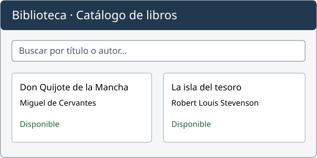

Me llamo Alex García y soy docente de informática. Me interesa el desarrollo web y disfruto creando ejemplos para aprender a organizar información con HTML.
| Título | Institución | Año |
|---|---|---|
| Ingeniería en Sistemas Computacionales | Universidad Tecnológica de Murcia | 2002 |
| Maestría en Ciencias de la Computación | Stanford University | 2004 |
| Fecha | Institución | Localidad | Provincia | Puesto |
|---|---|---|---|---|
| sept 2020 - actualidad | IES Ribera de los Molinos | Mula | Murcia | Profesor técnico |
| sept 2017 - sept 2020 | IES Vega del Argos | Cehegín | Murcia | Profesor técnico |
| sept 2011 - ago 2017 | IES Jaroso | Cuevas del Almanzora | Almería | Profesor técnico |
| sept 2010 - ago 2011 | IES Murgi | El Ejido | Almería | Profesor técnico |
| sept 2008 - ago 2009 | IES Jerez y Caballero | Hinojosa del Duque | Córdoba | Profesor técnico |
| sept 2006 - ago 2008 | IES Castillo de la Yedra | Cazorla | Jaén | Profesor técnico |
En 2025 desarrollé un catálogo web para que el alumnado de una biblioteca escolar pudiera consultar sus libros por título y autor.
Mi trabajo consistió en organizar la información y facilitar la consulta, construir las páginas con HTML y programar la búsqueda con JavaScript. El catálogo permite localizar las lecturas disponibles desde un navegador.

Figura 1. Prototipo ilustrativo del catálogo de la biblioteca escolar.
Una de las fichas de prueba corresponde a Don Quijote de la Mancha. Mi objetivo era facilitar la búsqueda de una lectura, incluso sin conocer su título completo.
Proyecto realizado en 2025.
Enlaces para ampliar información sobre tecnologías citadas en el currículum y otras utilizadas en el ámbito de la informática. Son recursos de consulta complementarios, no una relación de competencias profesionales.
Contacto de Alex García: alex.garcia@example.org.
© 2026 IES Francisco de Goya · Ejemplo didáctico de currículum.